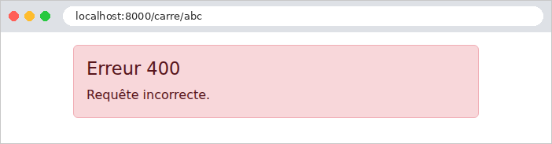

7. Le cycle de vie d'une requête
Entre l'arrivée d'une requête et le départ de sa réponse, [Laravel] enchaîne plusieurs étapes, et l'application peut intervenir à chacune d'elles. Nous en avons déjà rencontré plusieurs : les middlewares (exemples 03, 12, 16, 22), la liaison des paramètres de route (exemple 12), les gestionnaires d'exceptions (exemples 08 et 12). Ce chapitre les réunit dans un seul exemple, qui affiche dans la console un message à chaque étape, pour en observer l'ordre :
- 1 et 7. Les middlewares globaux, exécutés pour toutes les requêtes, avant même le routage. Un middleware enveloppe la suite du traitement : il voit passer la requête avant elle, et la réponse après elle (exemple 03). [Laravel] en installe plusieurs par défaut (les chaînes vides deviennent [null], le mode maintenance, les requêtes CORS...), dans l'ordre de la liste des middlewares globaux ;
- Le routage. [Laravel] cherche la route qui correspond à l'URL et à la méthode. Si aucune ne correspond, une exception [NotFoundHttpException] est levée (404) ;
- Les middlewares du groupe et de la route, dans l'ordre : d'abord ceux du groupe [web] (cookies, session, erreurs de formulaire, protection anti-CSRF, liaison des paramètres), puis ceux de la route. L'un d'eux, [SubstituteBindings], lie les paramètres de route (2, exemple 12). Les middlewares de la route (3 et 4) sont le bon endroit pour les vérifications propres à certaines actions : c'est ainsi que fonctionne le middleware [auth] du chapitre suivant. Si l'un d'eux rend une réponse sans appeler [$next] (ou lève une exception), le traitement s'arrête là : l'action n'est pas appelée ;
- 5. L'action, et la vue qu'elle fait fabriquer ;
- 6. La fin des middlewares, dans l'ordre inverse : chacun reçoit la réponse de [$next], peut la modifier (ajouter un entête, un cookie), et doit la rendre ;
- 8. Les méthodes *[terminate] des middlewares qui en ont une, exécutées *après l'envoi de la réponse au navigateur. Elles ne peuvent plus changer la réponse : elles servent aux traitements qui peuvent attendre (écrire un journal, envoyer une statistique...), sans faire patienter l'utilisateur ;
- x. Les gestionnaires d'exceptions : une exception levée par un middleware, par l'action ou par la vue est confiée au gestionnaire ([render], dans [bootstrap/app.php]) enregistré pour sa classe, qui fabrique une réponse d'erreur. Cette réponse remonte ensuite les middlewares, comme une réponse ordinaire.
C'est l'équivalent des filtres de [Java] et des intercepteurs de [Spring MVC], des filtres d'action d'[ASP.NET Core MVC], et des fonctions [before_request] / [after_request] de [Flask]. La particularité de [Laravel] est que presque tout y est middleware : la même notion sert au traitement de toutes les requêtes (middlewares globaux), d'une famille de routes (groupes), ou de quelques routes.
7.1. Exemple 24 : les étapes du traitement d'une requête
L'application n'a qu'une action, qui calcule le carré d'un entier : [/carre/7]. Selon l'URL, elle réussit, ou elle échoue de différentes façons. Les messages sont écrits dans la console du serveur par la fonction [error_log] de [PHP], que la commande [php artisan serve] affiche.
7.1.1. Le middleware global : app/Http/Middleware/Journal.php
- lignes 16-17 : le middleware affiche la requête ([getRequestUri()] : le chemin et les paramètres). C'est le message n° 1 : rien ne s'est encore passé dans [Laravel], pas même le routage ;
- ligne 19 : toute la suite du traitement se déroule dans cet appel ;
- ligne 20 : le message n° 7, quand tout le reste a été fait. [getStatusCode()] est le code de la réponse.
Un middleware global ne connaît pas la route choisie, puisque le routage n'a pas encore eu lieu. On l'utilise pour des traitements qui concernent toutes les requêtes : journalisation, compression, prise en compte d'un proxy (le middleware [TrustProxies] de [Laravel] corrige l'adresse du client quand l'application est placée derrière un serveur mandataire ; l'étude de cas en parle, à propos de l'adresse IP des clients).
7.1.2. La liaison du paramètre : routes/web.php
- lignes 12-16 : [Route::bind] enregistre une liaison explicite : tout paramètre de route nommé [{entier}] passe par cette fonction, qui reçoit le texte de l'URL et rend la valeur que recevra l'action. Elle accepte n'importe quel texte, et le convertit en entier, ou en [null] s'il n'en est pas un : contrairement à [whereNumber] (exemple 02), qui rendrait une page 404 pour [/carre/abc], c'est ici l'action qui décidera. Elle affiche le message n° 2. C'est l'autre forme de la liaison de route de l'exemple 12, qui liait un paramètre à une classe ([UrlRoutable]) ;
- lignes 19-20 : la route, nommée [carre], reçoit deux middlewares de route, qui s'exécuteront dans cet ordre, après ceux du groupe [web].
7.1.3. Les middlewares de route : Bloquer.php et Chrono.php
- ligne 16 : message n° 3. Un middleware de route connaît la route choisie : [$request->route()] la rend, et [getName()] son nom ;
- lignes 17-19 : le paramètre [?bloquer] de l'URL ([has] teste sa présence) provoque une erreur 403 (*Forbidden*, accès refusé) : [abort] lève une exception, qui interrompt le traitement.
- lignes 15-18 : message n° 4, et l'heure de départ, rangée dans les attributs de la requête (exemple 12). [hrtime(true)] est une horloge précise, en nanosecondes, faite pour mesurer des durées ;
- ligne 20 : message n° 6, après l'action, avec le code de la réponse ;
- lignes 26-34 : la méthode [terminate], appelée par [Laravel] après l'envoi de la réponse, avec la requête et la réponse : message n° 8, avec la durée écoulée depuis le message n° 4. [Laravel] l'appelle pour tous les middlewares de la route, même s'ils n'ont pas été exécutés (quand un middleware précédent a interrompu le traitement) : le test de la ligne 30 vérifie que la mesure a commencé.
7.1.4. La gestion des erreurs : bootstrap/app.php
- ligne 19 : [prepend] place le middleware global en tête de la liste : il s'exécute avant tous les autres, et voit la réponse après tous les autres ;
- lignes 23-27 : un gestionnaire pour les exceptions de la classe [DomainException] (et de ses sous-classes, cf. exemple 08) : une erreur « imprévue », transformée en page d'erreur « maison », avec le code 500 (*Internal Server Error*). Le message de l'exception est affiché dans la console, mais pas dans la page : il peut contenir des détails internes, qui ne regardent pas l'utilisateur ;
- lignes 30-33 : un gestionnaire pour toutes les erreurs HTTP. [abort(400)], [abort(403)], une URL sans route (404), une méthode refusée (405) : toutes lèvent une exception qui implémente l'interface [HttpExceptionInterface] de [Symfony], et qui porte son code ([getStatusCode()]). Ce seul gestionnaire remplace donc toutes les pages d'erreur en anglais de [Laravel] par la nôtre.
[Laravel] confie une exception au premier gestionnaire dont le type du paramètre lui correspond. Une exception qui n'a pas de gestionnaire devient une erreur 500 : en mode debug, c'est la page détaillée (exemple 03) ; sans le mode debug, la page d'erreur 500 standard. Il existe une autre façon, plus simple encore, de remplacer les pages d'erreur : une vue [resources/views/errors/404.blade.php] remplace la page de l'erreur 404, et de même pour chaque code (l'exemple 26 s'en sert). Les gestionnaires [render], eux, permettent un traitement quelconque : un message dans le journal, une réponse JSON, une redirection...
7.1.5. Le contrôleur et la page d'erreur
- ligne 13 : le paramètre [$n] reçoit la valeur liée par [Route::bind]. [Laravel] ne transmet pas à l'action un paramètre lié à [null] : le paramètre de l'action a donc une valeur par défaut, [null], qui sera la sienne dans ce cas ;
- ligne 17 : un paramètre qui n'est pas un entier : erreur 400 ;
- ligne 20 : le nombre 13 provoque une erreur « imprévue ». [DomainException] est une classe d'exception de la bibliothèque standard de [PHP] ;
- ligne 22 : le cas normal.
La page d'erreur reçoit le code d'erreur, et affiche un message adapté. La directive [@switch] choisit un bloc selon une valeur : [@case] désigne une valeur, [@break] termine le bloc, [@default] traite les autres valeurs. La vue [calcul/resultat.blade.php] affiche simplement le résultat.
7.1.6. Exécution
Le cas normal, [/carre/7] :

La console du serveur montre les huit étapes, dans l'ordre :
La dernière ligne est le journal du serveur de développement, écrit une fois la requête terminée. Un accès bloqué, [/carre/7?bloquer] :

Le premier middleware de route a levé une exception : le second middleware et l'action n'ont pas été exécutés. La réponse d'erreur, fabriquée par le gestionnaire, remonte jusqu'au middleware global. [terminate] a été appelée, mais n'a rien affiché, la mesure n'ayant pas commencé. Un paramètre qui n'est pas un entier, [/carre/abc] :

Cette fois, l'action a été appelée, avec [null] (qui s'écrit comme une chaîne vide : [carre()]), et c'est elle qui a levé l'erreur 400. Une erreur « imprévue », [/carre/13] :

L'exception a été traitée par son gestionnaire : l'utilisateur voit la page d'erreur « maison », et non la page détaillée, bien que le mode debug soit actif. L'exception est tout de même écrite dans le journal [storage/logs/laravel.log] : [Laravel] distingue le rapport d'une exception (*report*, son enregistrement dans le journal) de son rendu (*render*, la réponse). Enfin, une URL qui ne correspond à aucune route, [/inconnu] :
Le routage a échoué : aucune liaison, aucun middleware de route, aucune action. La page 404 est la nôtre :
Retenons l'essentiel. Les middlewares de route sont le bon endroit pour les vérifications communes à de nombreuses actions (l'utilisateur est-il connecté ? a-t-il le droit d'accéder à cette action ?) : le chapitre suivant s'en sert pour l'authentification. Les gestionnaires d'exceptions et les vues [errors/...] garantissent que l'utilisateur ne voit jamais une page technique, quelle que soit l'erreur : l'étude de cas en tire parti.